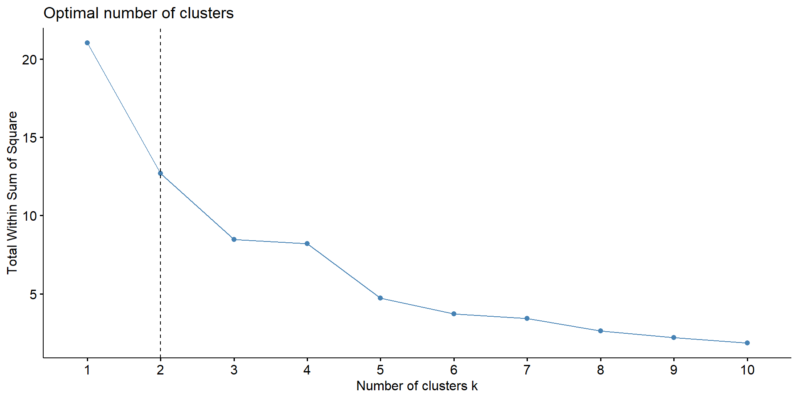
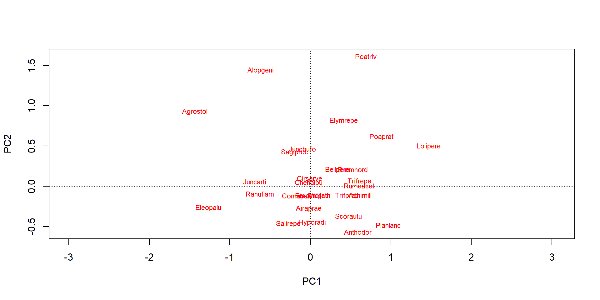
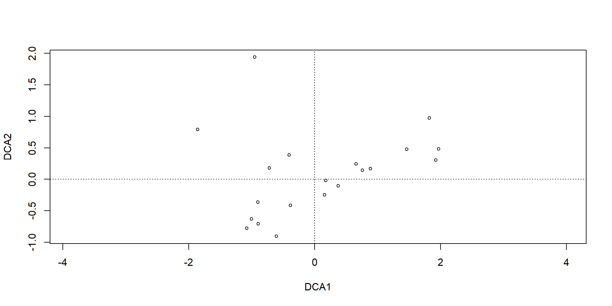

The data originates from the research of Batterink & Wijffels (1983), published as a report in Dutch.
The data for this session?
library(tidyverse)library(vegan)# Load the community dataset which we`ll use in the examples todaydune2_spe <-read_csv("Data/dune2_spe.csv")dune2_env <-read_csv("Data/dune2_env.csv")# Open the dataset and look if you can find any patternshead(dune2_spe)
We learned some models to study at ecological data.
These models allowed us to ask questions such as:
What are the effects of precipitation and temperature on species richness? or
How does the abundance of species change between habitats?
Why Multivariate? üå±
Let’s compare univariate vs multivariate approaches.
Univariate Example
You study how soil pH affects the abundance of one species (Species A):
# Univariate linear regressionmodel <-lm(species_A_abundance ~ soil_pH, data = your_data)summary(model)
This tells you:
üëâ How soil pH affects the abundance of one species.
Why That’s Limiting in Ecology
In real ecosystems: - You usually have many species per site. - Environmental variables may affect multiple species simultaneously. - Species may interact (e.g., competition, facilitation).
Moving to Multivariate
“What if I want to know how soil pH, moisture, and light influence the whole plant community?”
That’s where ordination methods (e.g., PCA, NMDS) and clustering shine.
They summarize patterns across multiple species simultaneously.
Examples of Questions in Multivariate statistics
Our research question might be:
How does the plants composition change along an elevation gradient?
What is the composition dissimilarity of plants communities?
How closely-related are local vegetation communities in terms of their composition ?
How does the data look?
Matrix Species
Site
Species 1
Species 2
…
Species n
1
abundance 1
abundance 2
…
abundance n
2
abundance 1
abundance 2
…
abundance n
m
…
…
…
…
Matrix locations
Site
Temperature
Precipitation
…
Driver n
1
Temperature 1
Precipitation 2
…
Driver n
2
Temperature 1
Precipitation 2
…
Driver n
m
…
…
…
…
Multivariate methods
Ordination and clustering are the two main classes of multivariate methods that community ecologists employ.
To some degree, these two approaches are complementary.
Hierarchical data clustering allows you to explore your data and look for discontinuities (e.g. gaps in your data), gradients and meaningful ecological units (e.g. groups or subgroups of species).
Given the continuous nature of communities, ordination can be considered a more natural approach.
Clustering
Hierarchical clustering offers insight into how your biodiversity data are organized and can help you to disentangle different patterns and the scales at which they can be observed.
Its results can be represented as dendrograms (tree-like diagrams), which describe how closely observations are.
'dendrogram' with 2 branches and 20 members total, at height 1.757535
Clustering
dend.plot <- dend %>%set("branches_lwd", 2) %>%# Branches line widthset("branches_k_color", k =2) %>%# Color branches by groupsset("labels_cex", 0.5) # Change label sizeplot(dend.plot, ylab ="Bray-Curtis Distance", main ="why would clusters be different?")
fviz_cluster(kmeans(varespec_m, centers =2), geom ="point", data = dune2_spe)+theme_minimal()

From Clusters to Gradients
Clustering tells us who is similar
Ordinations help explain why they are similar
Gradients (like pH, moisture, disturbance) may underlie these groupings
Ordinations
Ordination is a collective term for multivariate techniques which summarize a multidimensional dataset in such a way that when it is projected onto a low dimensional space, any intrinsic pattern the data may possess becomes apparent upon visual inspection (Pielou, 1984).
In ecological terms, ordination helps us understand community data.
Find key components of variation among samples, sites, species
Reduce the number of dimensions in multivariate data while limiting substantial loss of information.
Create new variables for use in subsequent analyses.
What is ordination?
Data
Matrix algebra
Multivariate statistics
Matrix algebra
Type of ordinations?
Unconstrained Ordination: we’re basically letting the data speak for itself. We don’t impose any specific relationships or constraints between the variables.
Constrained Ordination: we impose some restrictions or constraints on the analysis based on what we already know or suspect about the data.
In simple terms, unconstrained ordination lets the data tell its story without interference, while constrained ordination guides the analysis based on what we already know or suspect.
We are going to focus in Unconstrained Ordinations tion aims at arranging samples or species continuously along gradients.
Doing an ordination
This ordination goes in two steps:
First, we will perform an ordination on a species abundance matrix.
Then we will use environmental data (samples by environmental variables) to interpret the gradients that were uncovered by the ordination.
Different ordination techniques
Principal Component Analysis (PCA)
Detrended Correspondence Analysis (DCA)
Non-metric Multidimensional Scaling (NMDS)
And MORE…..
Why so many ordination methods?
Different ordination methods = different assumptions + different strengths.
Comparing Ordination Methods
Method
Type
Best For
Assumes
PCA
Linear
Species respond linearly to gradients
Normality, Euclidean distances
DCA
Unimodal
Species have peak abundances along gradients
Long gradients, curved structure
NMDS
Non-metric
Preserving ranked distances
No assumptions, works with Bray-Curtis
CCA/RDA
Constrained
Link communities to environmental variables
Explaining structure via predictors
Principal Component Analysis (PCA)
PCA is a linear method that helps us make sense of complex data by reducing its dimensions.
In a nutshell, the PCA linearly transforms the feature from the original space to a new feature space, containing principal components that explain most of the variance in the dataset.
Principal Component Analysis (PCA)
source:Coding club
Principal Component Analysis (PCA)
Euclidean distances among samples
The axes (also called principal components or PC) are orthogonal to each other (and thus independent).
Each PC is associated with an eigenvalue.
The sum of the eigenvalues will equal the sum of the variance of all variables in the data set.
The eigenvalues represent the variance extracted by each PC, and are often expressed as a percentage of the sum of all eigenvalues (i.e. total variance).
Principal Component Analysis (PCA)
The relative eigenvalues thus tell how much variation that a PC is able to ‘explain’.
Axes are ranked by their eigenvalues:
the first axis has the highest eigenvalue and thus explains the most variance
the second axis has the second highest eigenvalue, etc.
Principal Component Analysis (PCA)
PCA <-rda(dune2_spe, scale =FALSE)# Use scale = TRUE if your variables are on different scales (e.g. for abiotic variables).# Here, all species are measured on the same scale # So use scale = FALSEPCA
Call: rda(X = dune2_spe, scale = FALSE)
-- Model Summary --
Inertia Rank
Total 78.97
Unconstrained 78.97 19
Inertia is variance
-- Eigenvalues --
Eigenvalues for unconstrained axes:
PC1 PC2 PC3 PC4 PC5 PC6 PC7 PC8
24.181 17.678 7.557 6.760 4.274 4.009 2.835 2.584
(Showing 8 of 19 unconstrained eigenvalues)
Principal Component Analysis (PCA)
# Now plot a bar plot of relative eigenvalues. This is the percentage variance explained by each axisbarplot(as.vector(PCA$CA$eig)/sum(PCA$CA$eig))
# Calculate the percent of variance explained by first two axessum((as.vector(PCA$CA$eig)/sum(PCA$CA$eig))[1:2]) # 53%, this is ok.
[1] 0.5300765
Principal Component Analysis (PCA)
plot(PCA)
plot(PCA, display ="sites", type ="points")
plot(PCA, display ="species", type ="text")

Principal Component Analysis (PCA)
# In a biplot of a PCA, species' scores are drawn as arrows # that point in the direction of increasing values for that variablebiplot(PCA, choices =c(1,2), type =c("text", "points"), xlim =c(-5,5)) # biplot of axis 1 vs 2
Principal Component Analysis (PCA)
This implies that the abundance of the species is continuously increasing in the direction of the arrow, and decreasing in the opposite direction.
Thus PCA is a linear method.
PCA is extremely useful when we expect species to be linearly (or even monotonically) related to each other.
Unfortunately, we rarely encounter such a situation in nature.
Environmetal Variables and Triplot
fit <-envfit(PCA, dune2_env, perm =999)scores(fit, "vectors")
plot(PCA,dis="site")plot(fit, p.max =0.05, col ="red")
Detrended correspondence analysis (DCA)
chi-square distance metric among samples
DCA is an ordination method built on Correspondence Analysis (CA), which arranges samples and species in the same space to explore their relationships.
It is especially useful when species show unimodal responses along environmental gradients (i.e., they peak at some optimal conditions).
It has a problem with CA :suffers from creating often strong arch artefact in ordination diagrams. Which is caused by a non-linear correlation between first and higher axes
Detrended correspondence analysis (DCA)
Arch can be removed by detrending(smooths out the data to make it easier to see the main patterns), which is the base of the detrended correspondence analysis (DCA).
Think of DCA as a corrected version of CA—more reliable for real ecological gradients.
plot(DCA,dis="site")plot(fit, p.max =0.05, col ="red")

Non-metric Multidimensional Scaling (NMDS)
NMDS is a flexible, non-linear ordination method that shows how similar or different samples are—based on a chosen distance metric (e.g., Bray-Curtis). It tries to preserve the rank order of distances between samples—not the exact values.
It minimizes “stress”, which measures how well the distances in the reduced space reflect the original data.
Non-metric Multidimensional Scaling (NMDS)
The lower the stress value (a measure of goodness-of-fit), the better the representation of objects in the ordination-space is.
distance specifies the distance metric to use
k specifies the number of dimensions.You decide how many dimensions k to use.
NMDS does not use eigenanalysis like PCA or DCA.
So there’s no unique solution (you might get slightly different results each time).
Axes are not ranked by explained variance.
You must choose the number of dimensions in advance. ## Important Things to Know
NMDS does not use eigenanalysis like PCA or DCA.
So there’s no unique solution (you might get slightly different results each time).
Axes are not ranked by explained variance.
You must choose the number of dimensions in advance.
Non-metric Multidimensional Scaling (NMDS)
Methodology of NMDS:
Step 1: Perform NMDS with 1 to 10 dimensions Step 2: Check the stress vs dimension plot Step 3: Choose the lowest number of dimensions with acceptably low stress (typically < 0.2). 4: Re-run NMDS with that number of dimensions. 5: Check for convergence and interpret the final result.
Non-metric Multidimensional Scaling (NMDS)
# First step is to calculate a distance matrix. See PCOA for more information about the distance measures# Here we use bray-curtis distance, which is recommended for abundance datadist <-vegdist(dune2_spe, method ="bray")# In this part, we define a function NMDS.scree() that automatically # performs a NMDS for 1-10 dimensions and plots the nr of dimensions vs the stressNMDS.scree <-function(x) { #where x is the name of the data frame variableplot(rep(1, 10), replicate(10, metaMDS(x, autotransform = F, k =1)$stress), xlim =c(1, 10),ylim =c(0, 0.30), xlab ="# of Dimensions", ylab ="Stress", main ="NMDS stress plot")for (i in1:10) {points(rep(i +1,10),replicate(10, metaMDS(x, autotransform = F, k = i +1)$stress)) }}NMDS.scree(dist)
Non-metric Multidimensional Scaling (NMDS)
Non-metric Multidimensional Scaling (NMDS)
# Because the final result depends on the initial # random placement of the points # we`ll set a seed to make the results reproducibleset.seed(2)# Here, we perform the final analysis and check the resultNMDS1 <-metaMDS(dist, k =3, trymax =100, trace = F)# Do you know what the trymax = 100 and trace = F means?# Let's check the resultsNMDS1
Call:
metaMDS(comm = dist, k = 3, trymax = 100, trace = F)
global Multidimensional Scaling using monoMDS
Data: dist
Distance: bray
Dimensions: 3
Stress: 0.06826238
Stress type 1, weak ties
Best solution was repeated 5 times in 20 tries
The best solution was from try 9 (random start)
Scaling: centring, PC rotation, halfchange scaling
Species: scores missing
# If you don`t provide a dissimilarity matrix, metaMDS automatically applies Bray-Curtis. So in our case, the results would have to be the sameNMDS2 <-metaMDS(dune2_spe, k =2, trymax =100, trace = F)NMDS2
Call:
metaMDS(comm = dune2_spe, k = 2, trymax = 100, trace = F)
global Multidimensional Scaling using monoMDS
Data: dune2_spe
Distance: bray
Dimensions: 2
Stress: 0.1149964
Stress type 1, weak ties
Best solution was repeated 10 times in 20 tries
The best solution was from try 10 (random start)
Scaling: centring, PC rotation, halfchange scaling
Species: expanded scores based on 'dune2_spe'
Non-metric Multidimensional Scaling (NMDS)
stressplot(NMDS1)
Non-metric Multidimensional Scaling (NMDS)
plot(NMDS1, type ="t")
#Triplot
fit <-envfit(NMDS1, dune2_env, perm =999)scores(fit, "vectors")
plot(NMDS1,dis="site")plot(fit, p.max =0.05, col ="red")
Ordihull
group_colors <-c("red", "blue", "green", "orange")# Plot the NMDS1 ordination with no points plotted initiallyplot(NMDS1, type="t")plot(fit, p.max =0.05, col ="red")# Add convex hulls around groups defined by the 'Management' variable,# and label the points with their corresponding group nameswith(dune2_env, ordihull(NMDS1, Management, draw ='polygon',alpha =50,label =TRUE,col = group_colors ))
Ordihull
Summary
üå≥ In short: Ordination helps ecologists see the big picture.
Use PCA when gradients are short and responses are simple.
Use DCA when you suspect distinct ecological zones or turnover.
Use NMDS for flexible, non-linear ecological data—common in field studies.
Use CCA/RDA when you want to test specific hypotheses about drivers.
ü߆ Think: What ecological pattern am I trying to uncover or explain?